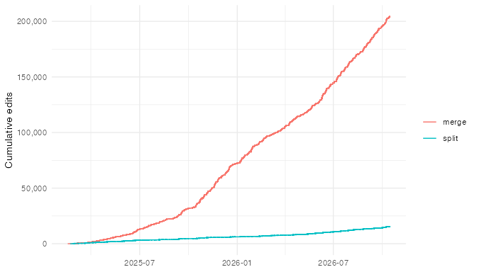
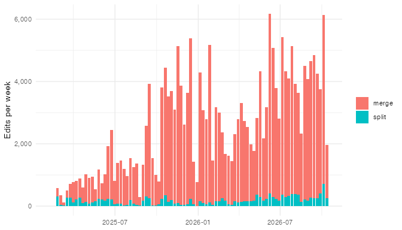

This vignette summarises the history of proofreading edits in the Aedes connectome. Every merge or split made in the segmentation is recorded as an operation by the CAVE chunkedgraph, along with a timestamp and the id of the user who made it.
The chunks below need CAVE access and a populated local edit cache. They are only evaluated when the vignette is rebuilt locally; elsewhere saved results are shown instead (see Rerunning this vignette).
Fetching the edit history
aedes:::aedes_all_operations() finds the most recent
operation id and then fetches details for every operation up to that
point. Results are cached on disk (in
rappdirs::user_cache_dir("aedes")), so only new operations
are fetched on subsequent calls. The first call takes several hours.
One user account (8041, BANCautomerge)
carried out an automated batch of about 75,000 merges over a few days in
September 2025, peaking at over 10,000 edits per hour. These
corresponded to merges of the nucleus into the main part of the
segmentation, based on analysis by Dana Sherman of the nuclear
segmentation provided by Zetta. These are excluded so that the plots
reflect human proofreading. We also keep only operations that completed
successfully (operation_status 0). Operations that remove
edges are splits; all others are merges.
auto_users <- 8041
edits <- ops %>%
filter(!.data$user %in% auto_users, .data$operation_status == 0) %>%
mutate(type = ifelse(is.na(.data$removed_edges) |
.data$removed_edges == "NA", "merge", "split")) %>%
arrange(.data$timestamp)
edit_summary <- edits %>%
summarise(n = n(), users = n_distinct(.data$user),
first = as.Date(min(.data$timestamp)),
last = as.Date(max(.data$timestamp)))
edit_summary#> n users first last
#> 1 219858 39 2025-02-15 2026-10-15Cumulative edits
p_cum <- edits %>%
group_by(.data$type) %>%
mutate(n = row_number()) %>%
ggplot(aes(.data$timestamp, .data$n, colour = .data$type)) +
geom_step() +
scale_y_continuous(labels = scales::label_comma()) +
labs(x = NULL, y = "Cumulative edits", colour = NULL) +
theme_minimal()
p_cum
ggsave("figures/edits-cumulative.png", p_cum, width = 7, height = 4, dpi = 96,
bg = "white")
Edits per week
p_week <- edits %>%
mutate(week = as.Date(cut(.data$timestamp, "week"))) %>%
count(.data$week, .data$type) %>%
ggplot(aes(.data$week, .data$n, fill = .data$type)) +
geom_col() +
scale_y_continuous(labels = scales::label_comma()) +
labs(x = NULL, y = "Edits per week", fill = NULL) +
theme_minimal()
p_week
ggsave("figures/edits-weekly.png", p_week, width = 7, height = 4, dpi = 96,
bg = "white")
Rerunning this vignette
To update the figures with the latest edits, rebuild the vignette
from the vignettes/ directory on a machine with CAVE
access:
withr::with_envvar(c(AEDES_LIVE_VIGNETTES = "true"), {
rmarkdown::render("edit-history.Rmd", output_dir = tempdir())
})This tops up the local edit cache and overwrites the PNGs in
vignettes/figures/. Then copy the printed
edit_summary values into the tidy-saved chunk
and commit the updated figures.